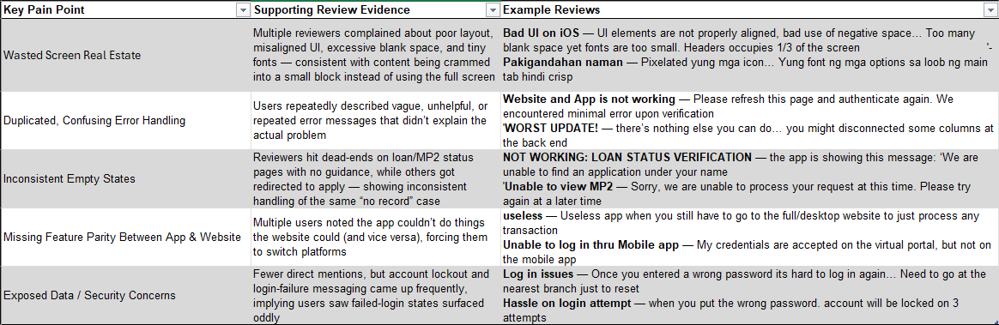
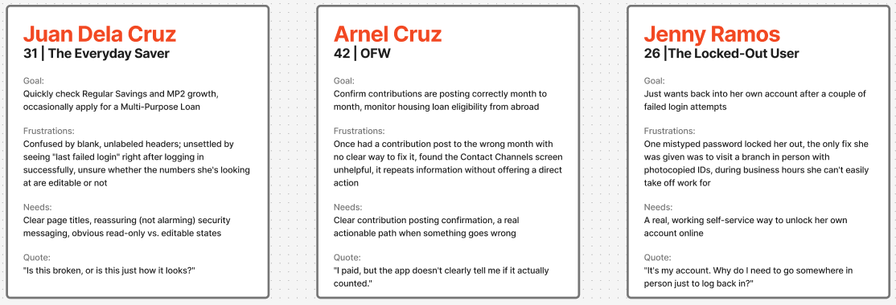
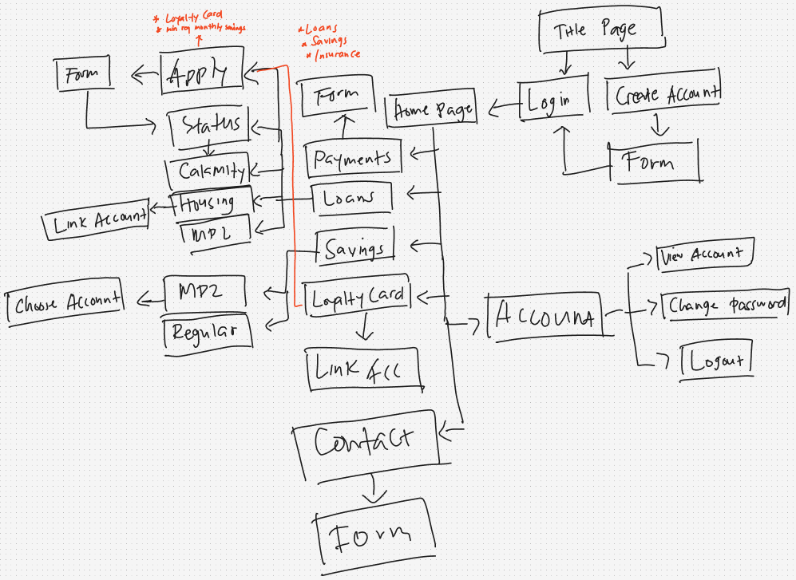
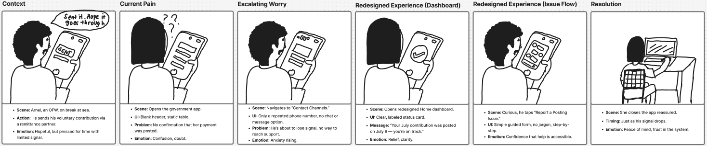
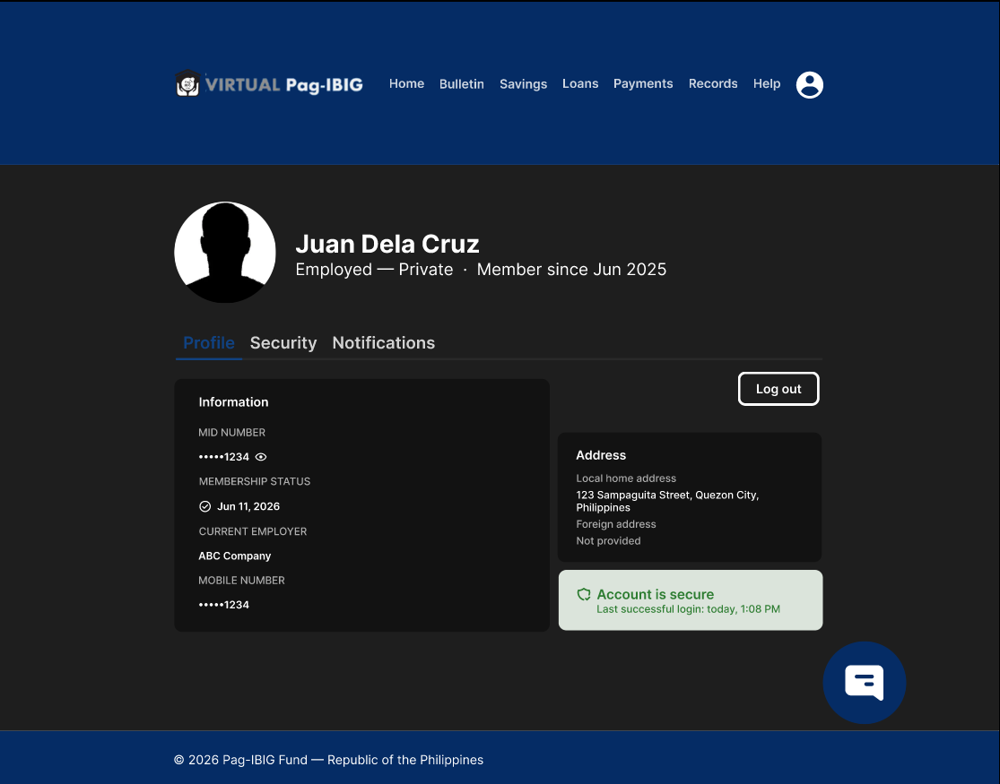

- Check total savings and confirm whether a contribution posted this month
- Find out if you're eligible to apply for a housing loan
- Report a contribution that seems to have an issue
- Check your registered mobile number in Account settings
Project Overview
Virtual Pag-IBIG is the official web and mobile portal of the Home Development Mutual Fund (HDMF), used by millions of Filipino members to manage savings, apply for housing and multi-purpose loans, and track contributions. However, the current product — spanning a 17-screen website and a companion mobile app — suffers from inconsistent layouts, broken error handling, missing account features, and exposed sensitive data that undermine the trust members need to place in a platform holding their retirement and housing savings.
The Problem
Pag-IBIG members — from everyday private-sector employees to OFWs contributing from abroad — struggle to complete core tasks on Virtual Pag-IBIG due to unclear system feedback, duplicated and confusing error states, and a website that offers no way to even view basic account information. Pag-IBIG (HDMF) has ranked among the top complained-about GOCCs in ARTA's recent reporting periods.
The Solution
A complete redesign of both the website and mobile app around one shared design system — fixing structural layout waste, unifying inconsistent error and empty states, closing the account-information gap between web and app, and introducing a new guided flow for reporting contribution posting errors, a documented and previously unaddressed member pain point.
Research & Discovery
Heuristic Evaluation
Rather than relying on secondhand reports, I conducted a full audit of the live product — all 17 website screens and 7 app screens — against Nielsen's 10 usability heuristics.
18
distinct usability violations identified
24
screens audited (17 web + 7 app)
9
screens sharing the single worst offender: 70–85% wasted white space
Key User Pain Points
Wasted Screen Real Estate
Nine out of seventeen website screens render their entire content in a small fixed-width block in the top-left corner, leaving the vast majority of the viewport empty — a structural problem, not a one-off.
Duplicated, Confusing Error Handling
The MP2 Savings screen fires the same error twice — once as inline text, once as a redundant modal — using unclear phrasing ("Minimal error is being encountered") that gives the member no real understanding of what happened or what to do next.
Inconsistent Empty States
Housing Loan's "View" page shows a bare "No record found" with no next step, while the identical situation on Multi-Purpose Loan pairs it with a clear "Apply Now" button — the same problem gets two different treatments depending on which page a member lands on.
Missing Feature Parity & Exposed Data
The mobile app has an Account Details screen; the website has none. Meanwhile, full MID numbers and mobile numbers appear in plaintext across both platforms, alongside a "last failed login" message shown right after a successful login.

User Personas
Two personas grounded in the confirmed pain points above represent the majority of Virtual Pag-IBIG's user base.
Juan Dela Cruz, 31 — The Everyday Saver
Goal: Quickly check Regular Savings and MP2 growth; occasionally apply for a Multi-Purpose Loan
Frustrations: Confused by blank, unlabeled headers; unsettled by seeing "last failed login" right after logging in successfully
Needs: Clear page titles, reassuring security messaging, obvious read-only vs. editable states
"Is this broken, or is this just how it looks?"
Arnel Cruz, 42 — The Voluntary Member Abroad
Goal: Confirm contributions are posting correctly month to month; monitor housing loan eligibility from abroad
Frustrations: Had a contribution post to the wrong month with no clear way to fix it; found Contact Channels unhelpful
Needs: Clear contribution posting confirmation, a real actionable path when something goes wrong
"I paid, but the app doesn't clearly tell me if it actually counted."

Design Process
Information Architecture
I restructured the site around user goals rather than product silos, and closed the web/app parity gap by introducing an Account section to the website for the first time.

Storyboard — "Did my contribution actually count?"
To ground the redesign in a real emotional stake rather than just screens, I storyboarded Arnel's scenario: an OFW checking his contribution status during a brief window of phone signal.
1
Context
Arnel sends his voluntary contribution through a remittance partner during a break at sea
2
Current Pain
He opens the app to a blank header and a static table with no clear "posted" confirmation
3
Redesigned Dashboard
A labeled Home screen shows a plain-language status card: "Your July contribution was posted on July 8"
4
Resolution
He closes the app reassured, just as he loses signal — a five-second glance replaced ten minutes of doubt

Design Solutions
1. A Design System Built to Fix What the Audit Found
Every component was built to directly resolve a specific, numbered issue from the heuristic evaluation — not decoration for its own sake.
Primary palette
#0B2C6B navy (preserves brand recognition) with a distinct Success #2E7D32 / Warning #F9A825 / Error #D32F2F semantic set, all AA-contrast checked. Typography is Inter, full H1–Caption scale.
Core components
A Page Header component (fixes the 9-screen blank-header problem), a Masked Data Field (MID/mobile shown as ••••••1249, reveal on tap), and a calm Security Status Card replacing alarming login messages.
2. Unified Empty & Error States
Every "no record" situation across Housing, Multi-Purpose, and Calamity Loans now uses one consistent component: a plain-language message paired with a single, clear action button. The MP2 Savings duplicate-error bug is resolved with one clear, dismissible message instead of two.
3. A Website Account Page — Closing the Parity Gap
The website gains a proper Account section for the first time, matching what the app already offered — masked ID display, contact info, and a reframed security summary.

4. "Report a Posting Issue" — A New Flow, Not Just a Fix
Rather than only repairing what was visibly broken, this flow was designed from scratch to answer a real, documented, previously unaddressed need: a simple, guided way for members to flag a contribution that didn't post correctly, replacing the current dead-end "call this number" pattern.
Prototyping & Testing
Interactive Prototype
Two clickable Figma prototypes were built — one for the website (desktop frames, top-nav navigation) and one for the app (mobile frames, tab-bar navigation) — covering Login, Home/Dashboard, Savings, Loans, Payments, Account, and Help/Report an Issue.
Usability Testing Plan
Tasks planned for participant testing:
Note: This test has not yet been run with real participants. Rather than presenting invented numbers, results will be added here once testing is complete.
Results & Impact
18 / 18
Heuristic violations from the original audit directly addressed
1 new
Flow introduced (Report a Posting Issue) for a previously unsolved member need
1 gap
Platform parity closed — Account info now on web, matching the app
Key Improvements
User Experience
Consistent empty/error states and a real page header on every screen remove the ambiguity that made the original product feel unfinished or broken.
Trust & Security
Masked sensitive data and reframed, calm security messaging replace alarming, plaintext-exposed information — directly addressing the biggest source of member anxiety found in the audit.
Feature Completeness
The new website Account page and the "Report a Posting Issue" flow close two real gaps rather than just reskinning what already existed.
Consistency
One shared design system across web and app means members get the same mental model regardless of which platform they're using.
Key Learnings & Next Steps
What I Learned
Working from real screenshots rather than secondhand reports made the difference between guessing at problems and finding provable ones — the 18-issue audit became the backbone of every design decision that followed. It also reinforced that redesigns for financial/government platforms carry real stakes: an unclear error message here isn't just an annoyance, it's a member wondering if their retirement savings are safe.
Next Steps
Phase 2:
- Usability-test the "Report a Posting Issue" flow specifically with OFW members
- A/B test the masked-MID reveal pattern to confirm it doesn't slow down legitimate account checks
- Extend the unified empty/error-state component to any remaining screens not covered in this first pass
- Explore a notification system for contribution posting confirmations